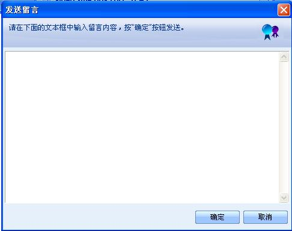
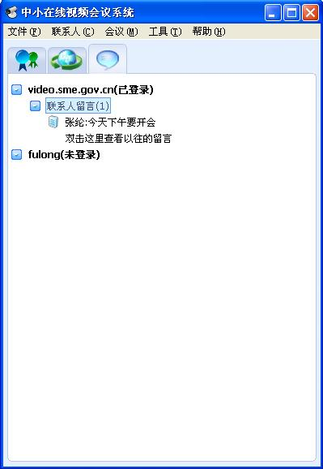
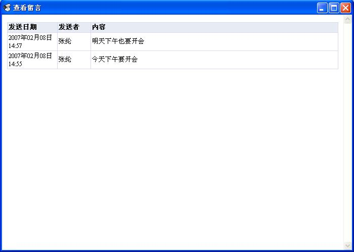
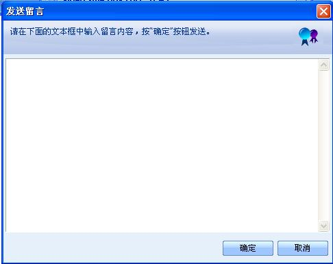
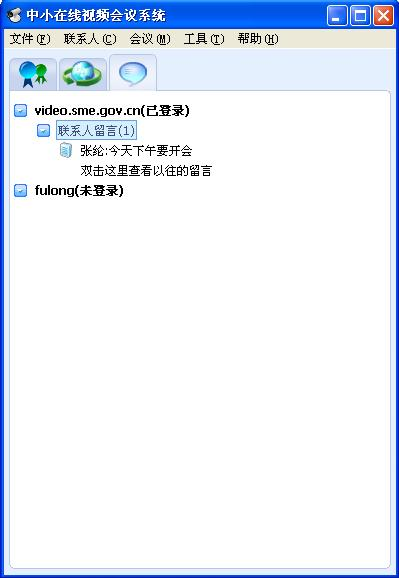
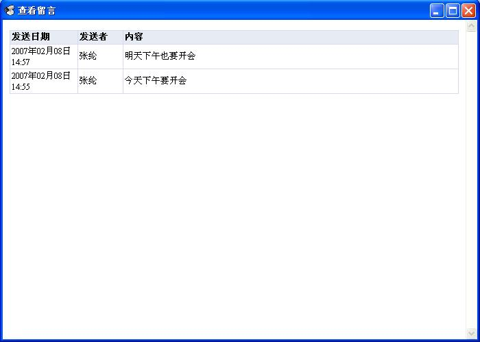

双击不在线的联系人，或在图4-17中弹出的菜单选择“发送留言”，向该联系人发送留言。若要同时向多人发送留言，选择“联系人”菜单的“发送留言”，弹出所有不在线的联系人，选中后点击“确定”发送留言。

图1 选择要发送留言的联系人

图2 发送留言-输入留言内容
登录后用户收到的留言显示在“消息列表栏”中，如图3所示。

图3 本次登录后收到的留言

图4 查看所有留言
| 客户端详解 > 发送留言到联系人 |
| 发送留言到联系人 |
| 双击不在线的联系人，或在图4-17中弹出的菜单选择“发送留言”，向该联系人发送留言。若要同时向多人发送留言，选择“联系人”菜单的“发送留言”，弹出所有不在线的联系人，选中后点击“确定”发送留言。

登录后用户收到的留言显示在“消息列表栏”中，如图3所示。 

|